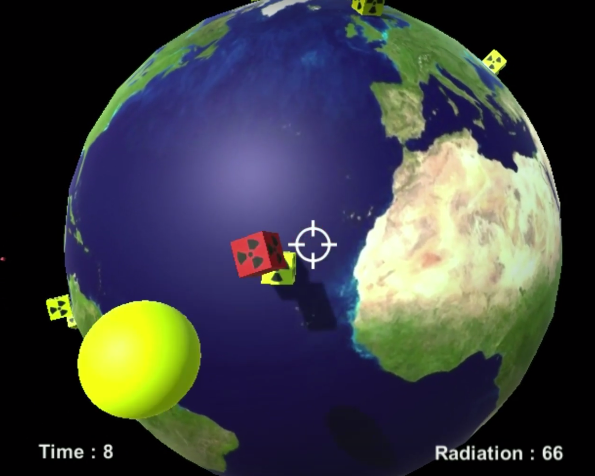
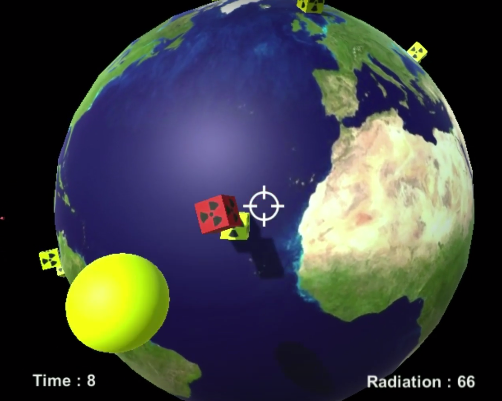

New York University
I'm a PhD in the Computer Science and Enginnering department at NYU Tandon. I work at the NYU Game Innovation Lab. I'm researching how AI can provide assistance in game design tasks.
I'm a Software Engineer and PhD Candidate at NYU. Currently, I'm researching how to design tools, based on Artificial Intelligence, able to assist humans in game design tasks.

I'm a PhD in the Computer Science and Enginnering department at NYU Tandon. I work at the NYU Game Innovation Lab. I'm researching how AI can provide assistance in game design tasks.
I have done my Masters and my Bachelors at UFPE. My research was related to the design of tools to improve the communication between game designers and game engineers.
I worked for 5 years at C.E.S.A.R, a private innovation center in Recife, Brazil, as a technical leader in projects related to education and technology. By being working in academia and industry I have a set of diverse works, like games, visualization projects, and Artificial Intelligence Assistants. Some of them are listed below.
 

Phasellus convallis elit id ullam corper amet et pulvinar. Duis aliquam turpis mauris, sed ultricies erat dapibus.
Phasellus convallis elit id ullam corper amet et pulvinar. Duis aliquam turpis mauris, sed ultricies erat dapibus.
Phasellus convallis elit id ullam corper amet et pulvinar. Duis aliquam turpis mauris, sed ultricies erat dapibus.
Phasellus convallis elit id ullam corper amet et pulvinar. Duis aliquam turpis mauris, sed ultricies erat dapibus.
Phasellus convallis elit id ullam corper amet et pulvinar. Duis aliquam turpis mauris, sed ultricies erat dapibus.
Phasellus convallis elit id ullam corper amet et pulvinar. Duis aliquam turpis mauris, sed ultricies erat dapibus.
Phasellus convallis elit id ullamcorper pulvinar. Duis aliquam turpis mauris, eu ultricies erat malesuada quis. Aliquam dapibus, lacus eget hendrerit bibendum, urna est aliquam sem, sit amet imperdiet est velit quis lorem.
Phasellus convallis elit id ullamcorper pulvinar. Duis aliquam turpis mauris, eu ultricies erat malesuada quis. Aliquam dapibus, lacus eget hendrerit bibendum, urna est aliquam sem, sit amet imperdiet est velit quis lorem.
2017
SeekWhence a retrospective analysis tool for general game design
Tiago Machado, Andy Nealen, Julian Togelius
Proceedings of the 12th International Conference on the Foundations of Digital Games
CICERO: Computationally Intelligent Collaborative Environment for game and level design
Tiago Machado, Andy Nealen, Julian Togelius
Proceedings of the Computational Creative Games Workshop at the 8th Internation Conference on Computational Creativity.
Blue Sky Ideas in Artificial Intelligence Education from the EAAI 2017 New and Future AI Educator Program
Eric Eaton, Sven Koenig, Claudia Schulz, Francesco Maurelli, John Lee, Joshua Eckroth, Mark Crowley, Richard G. Freedman, Rogelio E. Cardona-Rivera, Tiago Machado, Tom Williams
Working paper in the 7th Symposium on Educational Advances in Artificial Intelligence (EAAI-17)
2016
Shopping For Game Mechanics
Tiago Machado, Ivan Bravi, Zhu Wang, Andy Nealen, Julian Togelius
Procedural Content Generation Workshop
2013
Game Live Logs: Creating a Conversation Platform to Reduce Game Development Conflicts
Tiago Machado; Geber Ramalho; Carina F. Alves
Brazilian Symposium on Games and Entertainment (SBGames)
A Self-standing Multimedia Enriched Projector to enhance teaching experience in classroom in Brazilian public schools
Aline Lopes Timóteo, Victor Wanderley, Célia Fortes, Tiago Machado, Sonia Sette, Manoel Eusébio de Lima, Leonardo Castillo, Roberta de Aráujo Gomes. Claudia, Alex Sandro Gomes
Brazilian Journal of Computers in Education (RBIE)
2012
The Game Development Conflicts According to the Game Industry
Tiago Machado; Renan Lima, Fabio Florencio, Geber Ramalho; Carina F. Alves
Brazilian Symposium on Games and Entertainment (SBGames)
2011
Games as Cinema: Improve the Game Development through Cinema Studies
Tiago Machado; Geber Ramalho; Carina F. Alves
Brazilian Symposium on Games and Entertainment (SBGames)
2010
Game Development Guidelines: Practices To Avoid Conflicts Between Software and Design
Tiago Machado; Geber Ramalho; Carina F. Alves; Vinicius C. Garcia; Luiz F. Araujo.; Vamberto, Lemos; Vinicius Gomes Fabrino; Anderson Silva; Gutenberg Xavier Barros
Brazilian Symposium on Games and Entertainment (SBGames)
2009
A Comparison Study: Sketch-Based Interfaces versus WIMP Interfaces in Three Dimensional Modeling Tasks
Tiago Machado, Marcelo Walter, Alex Sandro Gomes
Web Congress, 2009. LA-WEB ’09. Latin American